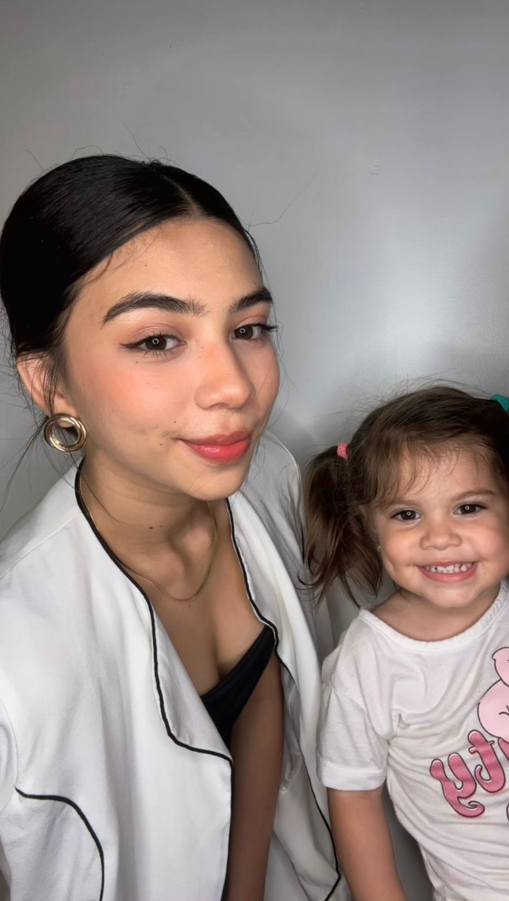

Destrave o inglês com um método pensado para a sua realidade — sem pressão, sem fórmulas engessadas, com presença e cuidado em cada aula.
Hoje
Aula leve · 50min
“Pela primeira vez, eu não senti vergonha de falar.”
Marina · aluna
Uma verdade silenciosa
Tantas pessoas tentam, desistem, e levam pra vida a sensação de que “não nasceram pro inglês”. Não é verdade. Era só o caminho errado.
Aquele frio que paralisa antes de soltar a primeira palavra.
Você entende, mas a fala não sai — e a frustração cresce.
Apostilas que nunca conversam com a sua vida real.
Regras intermináveis que afastam você do que importa: comunicar.
A jornada
“Mais do que ensinar inglês, eu cuido de pessoas que querem se comunicar com o mundo.”
Capítulo 01
Os primeiros contatos com o inglês foram pesados. Aulas mecânicas, vergonha, vontade de desistir.
Capítulo 02
Houve um momento em que pensei: talvez isso não seja pra mim.
Capítulo 03
Uma professora me mostrou que aprender podia ser leve. Que o método certo abre portas que nenhum esforço sozinho abre.
Capítulo 04
Entendi que método é cuidado. É olhar pra pessoa antes de olhar pra gramática.
Capítulo 05
Hoje eu ensino do jeito que eu queria ter aprendido: com presença, escuta e propósito.
Metodologia
Cada aluna é um universo. Por isso, não existe uma fórmula — existe um caminho desenhado a duas mãos, no seu tempo, com a profundidade que só a presença permite.
Cada aluna recebe um plano construído sobre a sua história e os seus objetivos.
Estou com você entre as aulas. Dúvidas, áudios, palavras novas — tudo cabe.
Conteúdos da sua vida: trabalho, viagens, séries, pessoas que você ama.
Você fala desde o primeiro dia. Sem espera, sem trava, sem julgamento.
Sem pressão, sem comparação. O ritmo é seu — e ele é respeitado.
Acompanho cada passo, ajusto, celebro. Você nunca está sozinha.
A experiência da aluna
Cada detalhe é pensado para que você se sinta acolhida, vista e em movimento. Aprender vira algo bonito de viver.
Construído com você na primeira conversa.
Sempre por perto, no seu ritmo.
Você sempre sabe onde está e pra onde vai.
Conversa, escuta e produção — todo encontro.
A transformação
Falar sem medo de errar — e gostar de se ouvir em inglês.
Pedir, conversar, se conectar. O mundo encolhe.
Reuniões, entrevistas, novos caminhos profissionais.
Expressar quem você é, sem perder nenhuma camada sua.
Lifestyle
Acredito que presença é o maior presente que se dá a alguém — à família, aos amigos e aos meus alunos. Minha vida lenta, os cafés sem pressa e os momentos com quem amo me ensinam o tipo de aula que quero oferecer: inteira, calma e verdadeira.
Presença
Estar inteira em cada encontro.
Leveza
Viver e ensinar sem peso.
Verdade
Tudo o que ofereço, eu vivo.

Histórias reais
"Eu já tinha desistido do inglês umas três vezes. Com a Yasha foi diferente — pela primeira vez não senti vergonha."
Marina
Aluna há 8 meses
"Viajei sozinha pra Europa e me virei. Coisa que eu jurava que não ia conseguir."
Camila
Aluna há 1 ano
"As aulas viraram um espaço meu. Saio mais leve, e falando mais inglês do que eu imaginava."
Larissa
Aluna há 6 meses
Comece sem medo
Sem compromisso. Sem teste. Sem cobrança. Só uma conversa pra você sentir como pode ser leve recomeçar — no seu tempo, do seu jeito.